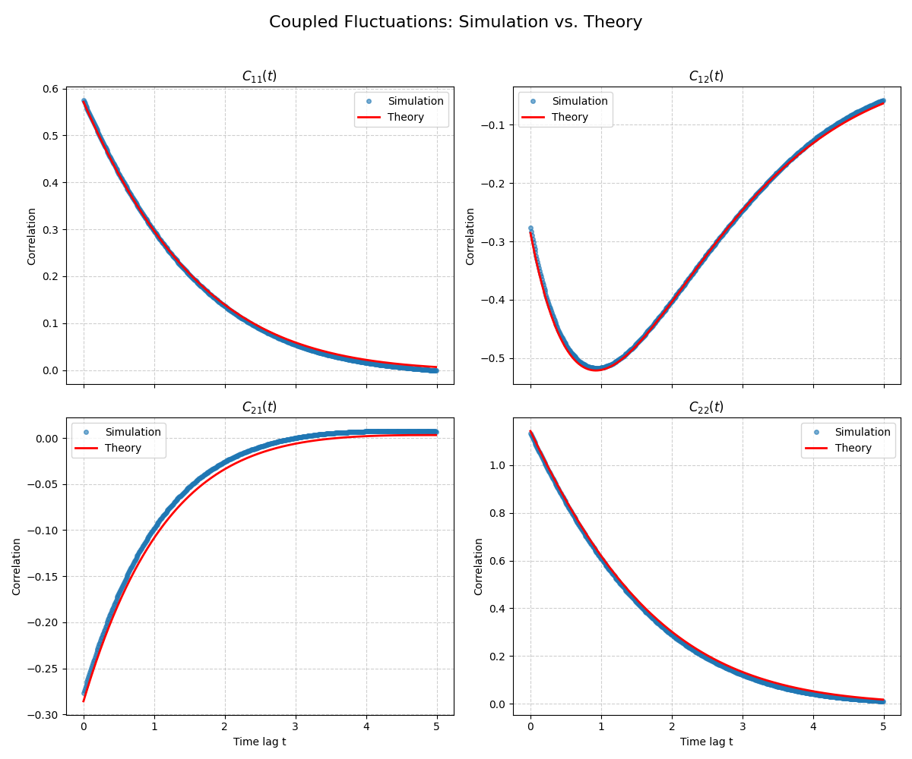

引言¶
在之前的课程中，我们已经建立了一套强大的理论工具来理解随机过程。我们从第17讲的朗之万方程出发，它从微观视角描述了单个粒子具体的、嘈杂的运动轨迹。接着，我们转向了福克-普朗克方程和路径积分，从宏观统计的角度描绘了概率的演化。
而在上一讲（第23讲），课程到达了一个关键的转折，探讨了两种构建宏观理论的强大思路：
-
“自下而上”（Bottom-Up）：通过粗粒化，从已知的微观粒子动力学规则（如粒子间的相互作用势）出发，一步步推导出描述集体行为的连续场论。这种方法物理图像清晰，但依赖于我们对微观细节的了解。
-
“自上而下”（Top-Down）：直接从宏观层面入手，假设我们对微观细节一无所知，转而利用热力学和对称性等最基本的物理原理，来构建一个关于涨落的普适理论。
到目前为止，我们的讨论大多集中在由单个变量描述的系统上（例如单个布朗粒子的位置）。然而，现实世界中的物理系统，从化学反应网络到生物细胞，再到凝聚态物质，其状态通常需要由多个相互耦合的宏观变量（我们记为 \(\phi_a\)）来共同描述。这就引出了本讲要解决的核心问题：
- 当一个系统接近但尚未完全达到热力学平衡时，我们如何描述这些耦合的宏观变量 \(\phi_a\) 的涨落动力学？
- 是否存在普适的物理定律，能够不依赖于系统具体的、复杂的微观细节，来支配这种近平衡态的行为？
为了回答这些问题，Erwin Frey 教授将介绍两个强大的理论框架，这两个理论在前面的课程都已有提及，它们共同构成了近平衡态非平衡统计物理的基石：
-
昂萨格理论 (Onsager's Theory): 这是一个基于基本对称性原理（特别是微观可逆性）的宏伟框架，上节课已经介绍，它可以导出著名的昂萨格倒易关系 (reciprocity relations)， 揭示了不同输运过程之间的内在联系。
-
动态涨落-耗散定理 (Dynamic Fluctuation-Dissipation Theorem, FDT): 这是我们在第17讲中学到的涨落-耗散定理的推广。它不再局限于静态或零频情况，而是在整个频率域内，将系统自发的热涨落谱与系统对外界扰动的耗散响应精确地联系起来。

1. 回顾：近平衡涨落的热力学框架¶
在上一节课中，教授确立了“自上而下”的研究思路：即不依赖于微观细节，仅从普适的热力学原理出发，构建宏观涨落理论。这一节，我们将系统地搭建这个理论的静态框架。其核心思想是，将熵 \(S\) 视为一个描述系统稳定性的“势能地貌”，所有近平衡态的静态性质，都可以从这个地貌的几何形状中推导出来。
1.1 局域平衡假设¶
昂萨格理论的基石是局域热力学平衡假设 (local equilibrium hypothesis)。这个假设指出，即使一个系统在整体上处于非平衡态，我们仍然可以认为在足够小的时空尺度内，系统的每个小部分（或子系统）都处于其自身的局域平衡态。这个看似简单的假设具有强大的威力，因为它允许我们运用平衡态统计力学的全部理论工具，特别是熵，来描述系统的状态。
基于这个假设，一个宏观状态（由一组变量 \(\{\phi_a\}\) 描述）出现的概率，与该状态的熵 \(S(\{\phi_a\})\) 直接相关，其形式类似于玻尔兹曼分布：
这个公式是连接宏观热力学与统计涨落的桥梁。它告诉我们，系统的涨落行为，本质上是在熵构成的“地貌”上进行的探索。一个系统总是在其最概然状态（即熵最大的状态）附近涨落。因此，观察到一个偏离平衡态的涨落的概率，必然与这个涨落导致熵减少的程度有关。上述公式正是这一物理原理的数学体现。
1.2 熵的高斯近似¶
上节已经讲过，我们关心的是系统在稳定平衡态（熵的极大值点，我们定义为 \(\phi_{\text{eq}}=0\)）附近的微小涨落。在任何函数的极大值点附近，我们都可以用一个二次函数（抛物线）来近似它。因此，我们可以将熵 \(S\) 在在平衡点附近进行泰勒展开，并保留到二阶项，得到一个高斯近似：
这里采用了爱因斯坦求和约定，且矩阵 \(\tau_{ab}\) 正是我们在上一讲定义的稳定性矩阵 \(\Gamma_{ab} = -\left.\frac{\partial^2 S}{\partial \phi_a \partial \phi_b}\right|_{\phi=0}\)。之所以本讲用\(\tau_{ab}\) 表示是与下一节的动力学矩阵进行区分
- \(S_0\) 是平衡态的最大熵。
- 对称且正定的矩阵 \(\tau_{ab}\) 在此扮演了核心角色。它描述了熵“山峰”的曲率，代表了系统的热力学刚度 (thermodynamic stiffness)。\(\tau_{ab}\) 的值越大，意味着熵“山峰”越陡峭，系统就越“不愿意”偏离平衡态，涨落也就越小。
通过这个近似，我们将抽象的“熵地貌”转化成了一个具体的、数学上易于处理的倒扣抛物面。
1.3 静态性质：读取“地貌”的信息¶
一旦我们知道了熵地貌的形状（由 \(\tau_{ab}\) 决定），我们就可以立即“读取”出系统的所有静态热力学性质。
- 静态关联/涨落幅度: 将高斯形式的熵代入概率公式，由于概率分布 \(P_{\text{eq}} \sim \exp(-\frac{1}{2}\tau_{ab}\phi_a\phi_b)\) 是一个多维高斯分布，其协方差矩阵（即涨落的幅度）就是 \(\tau\) 矩阵的逆矩阵：
这非常直观：熵地貌越陡峭（\(\tau\) 越大），涨落的范围（\(\tau^{-1}\)）就越小。 - 热力学恢复力: 驱动系统回归平衡的“力”是什么？正是熵“地貌”的坡度。我们定义广义热力学力 (generalized thermodynamic forces)为熵的梯度：
这个线性关系可以看作是近平衡系统的“热力学胡克定律” (\(F = -kx\))。它表明，系统偏离平衡越远（\(\phi_b\) 越大），将它拉回熵最大点的恢复力 \(\mu_a\) 就越强。
至此，我们已经完全建立了一个静态的框架。然而，这个框架无法告诉我们一个涨落是如何随时间演化的。为此，我们需要引入最后一个，也是最关键的物理原理。
1.4 引入动力学：微观可逆性的烙印¶
为了描述动力学，我们考虑含时关联函数 \(C_{ab}(t) = \langle \phi_a(t) \phi_b(0) \rangle\)。这个函数衡量了系统的“记忆”：在0时刻观测到涨落 \(\phi_b\)，在 \(t\) 时刻还能在多大程度上“感受”到它的影响。
昂萨格理论最深刻的洞见在于，这个宏观的、通常随时间衰减的函数，必须服从一个源自微观世界基本对称性的严格约束——微观时间反演不变性 (microscopic time-reversal invariance)。
底层的微观动力学（无论是牛顿力学还是哈密顿力学）在时间反演下是对称的。这意味着，将任何微观过程录像并倒带播放，看到的景象在物理上都是可能发生的。当这个微观对称性原理被应用到宏观涨落变量的统计平均上时，便得到了一个关于关联函数的普适关系：
其中，\(\epsilon_a = \pm 1\) 是宏观变量 \(\phi_a\) 在时间反演操作 (\(t \to -t\)) 下的宇称 (parity)。 - 对于在时间反演下不变的变量（如位置、密度、能量），\(\epsilon = +1\)。 - 对于在时间反演下反号的变量（如速度、动量、磁场），\(\epsilon = -1\)。
这个对称性关系是整个倒易关系理论的基石。它如同一座桥梁，将宏观世界不可逆的“时间之箭”（关联函数随时间衰减）与微观世界可逆的时间对称性深刻地联系在了一起。一个看不见的微观对称性，为我们可测量的宏观动力学行为，施加了一个不可违背的法则。
2. 线性动力学与昂萨格回归假设¶
在第一小节中，我们利用熵 \(S\) 构建了一个静态的“热力学地貌”，并从它的形状（由热力学矩阵 \(\tau_{ab}\) 描述）推导出了涨落的幅度和恢复力。现在，我们要回答下一个关键问题：系统是如何在这个地貌上“移动”的？这就需要我们为涨落变量 \(\phi_a\) 引入一个动力学演化方程。
2.1 多变量朗之万方程：一个合理的动力学模型¶
描述近平衡系统动力学最自然、最简单的方式，就是将我们在第17讲学到的单变量朗之万方程进行推广。我们假设涨落的演化由两部分驱动：一个将系统拉回平衡的确定性恢复力，和一个代表微观热运动的随机力。由此，我们写下线性的多变量朗之万方程：
确定性恢复项 (\(-\Gamma_{ab} \phi_b(t)\)): 这一项描述了系统如何确定性地向平衡点 (\(\phi = 0\)) 回归。
-
新引入的矩阵 \(\Gamma_{ab}\) 是一个动力学矩阵 (kinetic matrix)。它描述了涨落 \(\phi_b\) 的存在，会以多快的速率引起变量 \(\phi_a\) 的变化。
-
关键区别：这个动力学矩阵 \(\Gamma\) 与上一节的热力学矩阵 \(\tau\) 是完全不同的概念。\(\tau\) 描述的是静态的恢复力大小（地貌陡峭程度），而 \(\Gamma\) 描述的是动态的响应速率（下滑速度）。此外，与必须对称的 \(\tau\) 不同，\(\Gamma\) 不一定是对称的。
-
随机噪声项 (\(\xi_a(t)\)): 这一项代表了来自系统内部的微观自由度的、永不停歇的随机“踢动”。我们假设它是一个高斯白噪声，其统计性质由其均值和协方差定义：
$$ \langle \xi_a(t) \rangle = 0 $$ $$ \langle \xi_a(t) \xi_b(t') \rangle = N_{ab} \delta(t - t') $$
其中 \(N_{ab}\) 是噪声关联矩阵，它描述了噪声的强度。我们暂时将其视为一个未知量，稍后会发现它并非独立参数。
2.2 昂萨格回归假设：从随机到确定的桥梁¶
上面的朗之万方程是随机的，它的解是一条条充满噪声的轨迹。但我们关心的关联函数 \(C_{ab}(t) = \langle \phi_a(t) \phi_b(0) \rangle\) 是一个光滑、确定的函数。我们如何从一个随机方程得到一个确定性的结果呢？
这里，昂萨格提出了一个天才般的物理洞见，被称为昂萨格回归假设 (Onsager's regression hypothesis)。
昂萨格回归假设（Onsager Reciprocal Relations）是由美国物理化学家拉尔斯·昂萨格（Lars Onsager）于1931年提出的非平衡热力学核心理论之一。其物理本质在于揭示了在接近热力学平衡的线性响应范围内，不同不可逆过程（如热传导、扩散、电化学等）之间的耦合系数具有对称性。拉尔斯·昂萨格（1903-1976）出生于挪威，后移居美国，在康奈尔大学任教。他以解决二维伊辛模型（Ising Model）和非平衡热力学问题闻名，1968年因“对热力学不可逆过程的倒易关系的发现”获得诺贝尔化学奖。
昂萨格回归假设核心思想是：一个由热运动自发产生的微小涨落，其平均衰退行为，与一个由外部微小扰动（比如我们用镊子轻轻拨一下系统）引起的宏观弛豫行为，遵循完全相同的动力学规律。
这背后的物理直觉是，无论涨落是如何产生的，系统本身“并不知道”。一旦涨落出现，系统底层的动力学机制（由 \(\Gamma\) 描述）就会以同样的方式将其“抹平”。
这个假设的数学威力在于，当我们计算一个条件平均——即固定初始涨落为 \(\phi(0)\)，然后观察其后的平均演化路径 \(\bar{\phi}_a(t) = \langle \phi_a(t) \rangle_{\phi(0)}\) 时——随机噪声项的平均效果为零 (\(\langle \xi_a(t) \rangle_{\phi(0)} = 0\))。因此，这个平均路径的演化不再是随机的，而是遵循一个纯粹确定性的方程：
2.3 关联函数的动力学方程：理论的结合¶
昂萨格的假设为我们提供了一座桥梁。现在，我们将它与关联函数的定义结合起来。通过对关联函数 \(C_{ab}(t)\) 求时间导数，并应用回归假设，我们立即得到一个关于关联函数本身的、纯粹确定性的微分方程：
这个方程需要一个初始条件，而这个初始条件恰恰是我们在第一节中用静态热力学推导出的结果！
这是一个里程碑式的成果！我们成功地将一个随机动力学问题，转化为了一个我们非常熟悉的、确定性的线性常微分方程组。它的解完美地体现了静力学与动力学的融合：
这个解告诉我们一个清晰的物理图像： - 涨落的初始幅度 \(C(0)\)，由热力学地貌的形状（\(\tau\)）决定。 - 涨落随时间的衰减方式 \(e^{-\Gamma t}\)，由系统的内在动力学（\(\Gamma\)）决定。
就这样，我们把静态的热力学框架和动态的演化模型无缝地连接在了一起。
3. 昂萨格倒易关系：动力学中隐藏的对称性¶
我们已经得到了描述涨落如何随时间衰减的完整动力学方程 \(C(t) = e^{-\Gamma t} \tau^{-1}\)。这个结果虽然完备，但形式还比较抽象。现在，我们将它“翻译”成非平衡热力学中更常用、物理意义更直观的语言——“流 (flux)”与“力 (force)” 的语言。通过这次视角转换，我们将揭示出动力学矩阵 \(\Gamma\) 中隐藏的一个深刻的对称性。
3.1 昂萨格动力学系数 \(L\)：输运现象的语言¶
在非平衡热力学中，我们通常不直接讨论涨落变量 \(\phi_a\)，而是讨论它们的变化率，这被称为热力学流 (flux)，记为 \(J_a \equiv \partial_t \bar{\phi}_a\)。比如，它可以是单位时间通过某个界面的热量（热流）、粒子数（粒子流）或电荷（电流）。
同时，驱动这些“流”的，正是我们在第一节中定义的广义热力学力 (force)，\(\mu_d = -\tau_{db}\phi_b\)。这个力代表了系统偏离平衡的程度，比如温度梯度、化学势梯度或电势差。
在平衡点附近，一个自然的假设是：“流”的大小与驱动它的“力”成线性关系。这就像电路中的欧姆定律（电流正比于电压）。因此，我们可以写下宏观输运过程的中心方程：
这里的矩阵 \(L_{ad}\) 就是大名鼎鼎的昂萨格动力学系数 (Onsager kinetic coefficients)。它是一个输运系数矩阵，其对角元 \(L_{aa}\) 描述了力 \(\mu_a\) 如何驱动其共轭流 \(J_a\)（例如，电导率），而非对角元 \(L_{ad}\) 则描述了不同过程之间的交叉效应（例如，温度梯度如何引起电流，即热电效应）。
这个物理上直观的 \(L\) 矩阵，与我们之前定义的抽象矩阵 \(\Gamma\) 和 \(\tau\) 有什么关系呢？通过简单的代数替换，我们可以轻松地建立起它们之间的桥梁：
因此，我们找到了它们之间的精确关系：
通过这次“翻译”，我们把问题转化为了：这个物理上可测量的输运矩阵 \(L\) 是否具有什么普适的性质？
3.2 倒易关系的推导：汇集所有线索¶
现在，我们迎来了本讲推导的顶点。我们将汇集前面所有的关键成果，来证明 \(L\) 矩阵必须服从一个惊人的对称性。
我们的推导过程就像一个逻辑完美的证明，需要三个关键输入：
-
输入一 (来自 1.4节)：源于微观可逆性的关联函数对称性 \(C_{ab}(t) = \epsilon_a\epsilon_b C_{ba}(-t)\)。
-
输入二 (来自 2.3节)：源于昂萨格回归假设的关联函数动力学方程 \(\partial_t C(t) = -\Gamma C(t)\)。
-
输入三 (来自 1.3节)：源于热力学的初始条件 \(C(0) = \tau^{-1}\)。
推导开始：¶
1.我们从微观可逆性关系出发，对其两边关于时间 \(t\) 求导，然后考察 \(t \to 0^+\) 的瞬间：
由于关联函数在 \(t=0\) 处是连续可导的（对于 \(t>0\) 和 \(t<0\)），左右导数相等，因此：
2.现在，我们用动力学方程来计算这个导数：
3.将第2步的结果代入第1步的等式中，我们得到：
4.整理后，我们就得到了最终的昂萨格倒易关系 (Onsager Reciprocity Relation)：
这是一个极其深刻和强大的结论！它告诉我们，一个描述“力 b 如何驱动流 a”的输运系数 \(L_{ab}\)，与一个描述“力 a 如何驱动流 b”的系数 \(L_{ba}\)，两者之间必然存在一个由时间反演宇称决定的简单对称关系。
这如同物理学中的一首诗：一个隐藏在微观世界、凡人无法看见的时间对称性，却在宏观世界中可测量的输运系数矩阵上，留下了它优美的对称“指纹”。 比如，它预言了加热一根金属棒的一端会在另一端产生电压，反过来，在这根金属棒上施加电压也会导致热量的输运，并且这两种交叉效应的强度是严格相关的。这一定律完全不依赖于金属的种类或微观结构，是所有近平衡系统的普适法则。
为了清晰地区分本讲中出现的多个矩阵（\(\tau\), \(\Gamma\), \(L\), \(N\)），它们虽然形式相似但物理角色迥异，我们总结如下表：
| 符号 | 名称 | 定义 | 物理意义与性质 |
|---|---|---|---|
| \(\phi_a\) | 热力学变量 | 宏观状态变量 | 描述系统对平衡态的偏离。 |
| \(\mu_a\) | 热力学力 | \(\mu_a = -\tau_{ab} \phi_b\) | 驱动系统回归平衡的广义力。 |
| \(\tau_{ab}\) | 热力学矩阵 | \(S = S_0 - \frac{1}{2} \tau_{ab} \phi_a \phi_b\) | 定义熵“势垒”的刚度。对称矩阵：\(\tau_{ab} = \tau_{ba}\)，且正定。 |
| \(\Gamma_{ab}\) | 动力学矩阵 | \(\partial_t \bar{\phi}_a = -\Gamma_{ab} \bar{\phi}_b\) | 关联变量的变化率与其当前值。不一定对称。 |
| \(L_{ab}\) | 昂萨格系数矩阵 | \(J_a = -L_{ad} \mu_d\) (\(L = \Gamma \tau^{-1}\)) | 连接热力学流 (\(J_a\)) 与力 (\(\mu_d\))。编码了系统的线性响应。服从倒易关系 \(L_{ab} = \epsilon_a \epsilon_b L_{ba}\)。 |
| \(N_{ab}\) | 噪声关联矩阵 | \(\langle \xi_a(t) \xi_b(t') \rangle = N_{ab} \delta(t - t')\) | 规定了微观随机力的强度和关联。对称矩阵。 |
4. 熵产生与热力学第二定律的检验¶
我们从微观时间对称性出发，推导出了输运矩阵 \(L\) 的对称性。现在，我们要从一个完全不同的、同样是基本物理原理的角度——热力学第二定律——来考察 \(L\) 矩阵，看看它还必须满足什么其他约束。这个检验将为我们的理论赋予坚实的宏观热力学基础。
4.1 熵产生率：不可逆过程的“引擎”¶
热力学第二定律的核心是，对于一个孤立系统自发地向平衡态演化的过程，其总熵必须增加（或保持不变），即 \(\partial_t S \geq 0\)。我们来计算一下在我们理论框架下熵的变化率。
利用链式法则，熵随时间的演化率可以写成：
我们立刻认出，这两项正是在第三节中定义的热力学力 (\(\mu_b = \frac{\partial S}{\partial \phi_b}\)) 和热力学流 (\(J_b = \frac{\partial \phi_b}{\partial t}\))！因此，我们得到了一个在非平衡热力学中极为重要的表达式：
这个公式的物理意义：系统的总熵产生率，等于所有（广义的）“力”与它们共轭的“流”的乘积之和。这就像电路中消耗的总功率等于所有元件的（电压 × 电流）之和一样。它量化了系统内部不可逆过程“燃烧”能量、产生熵的速度。
现在，我们将上一节的线性关系 \(J_b = L_{bd}\mu_d\) 代入，得到：
4.2 \(L\) 矩阵的正定性：稳定性的保证¶
热力学第二定律要求，对于任何非平衡状态（即任何非零的热力学力 \(\mu_a\)），熵产生率必须为正：\(\partial_t S > 0\)。将这个物理要求施加到我们的数学表达式上：
这是一个标准的二次型表达式。在线性代数中，一个矩阵 \(L\) 能够使得二次型 \(x^TLx\) 对任何非零向量 \(x\) 都为正，这个矩阵就被定义为正定矩阵 (positive-definite matrix)。
因此，我们得到了一个强有力的结论：热力学第二定律要求昂萨格系数矩阵 \(L\) 必须是正定的。
这个结论的物理意义是： * 保证平衡态的稳定性：\(L\) 的正定性确保了系统一旦偏离平衡，熵一定会增加，从而驱动系统必然地向着平衡态回归，而不会自发地跑向更远离平衡的状态。 * 排除“永动机”：它禁止了任何净效应为熵减少的宏观过程的发生。
至此，我们已经从两个完全独立的、第一性的物理原理中，为输运系数矩阵 \(L\) 施加了两个强大的数学约束：
1.来自微观可逆性 (第3节) → \(L\) 具有对称性 (\(L_{ab} = \epsilon_a \epsilon_b L_{ba}\))
2.来自热力学第二定律 (第4节) → \(L\) 必须是正定的
这两个约束条件共同构成了昂萨格理论的核心，它们极大地限制了任何近平衡系统的宏观动力学行为可能具有的形式。
5. 动态涨落-耗散定理：为噪声定价¶
到目前为止，我们已经构建了一个相当完整的近平衡动力学理论。我们有了一个描述系统静态稳定性的热力学矩阵 \(\tau\)，一个描述系统动态弛豫速率的动力学矩阵 \(\Gamma\)，以及一个描述宏观输运的昂萨格矩阵 \(L\)。
然而，在我们的理论核心——朗之万方程 \(\partial_t\phi = -\Gamma\phi + \xi\) 中，还有一个关键参数的身份是未知的：噪声关联矩阵 \(N\)。它描述了微观随机力的强度，但截至目前，它只是一个我们凭空引入的参数。这显然不能令人满意。一个完备的理论必须能够解释噪声的来源和大小。
本节的核心任务，就是为噪声 \(N\)“定价”。我们将证明，\(N\) 并非一个需要额外测量的独立参数，而是完全由我们已知的、描述系统宏观耗散性质的矩阵（\(L\) 或 \(\Gamma\) 和 \(\tau\)）所决定。这个深刻的联系，就是动态涨落-耗散定理 (Dynamic Fluctuation-Dissipation Theorem)。
我们的策略是：用两种完全不同的视角来计算同一个物理量——涨落的频谱密度 \(C_{ab}(\omega)\)。一条路从宏观响应出发，另一条路从微观噪声出发。令两者殊途同归，我们就能解开 \(N\) 的秘密。
5.1 视角一：从宏观响应计算涨落谱¶
第一种方法从系统的宏观响应行为出发。我们已经知道，一个涨落的平均衰减行为由确定性方程 \(\partial_t C(t) = -\Gamma C(t)\) 描述。这个方程描述了系统是如何耗散 (dissipate) 掉一个涨落的。
通过对这个时域方程进行傅里叶变换，我们可以得到在频域中，涨落的功率谱密度 (power spectral density) \(C(\omega)\)。这个谱密度告诉我们，系统的“涨落能量”是如何在不同频率（或时间尺度）上分布的。经过计算，我们得到：
其中，\(G(\omega) = (-i\omega I + \Gamma)^{-1}\) 是系统的传播子或响应函数。它描述了系统对一个频率为 \(\omega\) 的外部扰动的响应强度。
这个表达式的物理图像是：系统的涨落谱，完全由它的宏观响应 (G) 和静态热力学刚度 (τ) 所决定。
5.2 视角二：从微观噪声计算涨落谱¶
第二种方法则直捣黄龙，从微观噪声的源头出发。我们直接对朗之万方程本身进行傅里lé变换：
解出 \(\phi(\omega)\)，我们得到一个极其清晰的物理图像：
这个表达式的意义是：系统可观测的、具有复杂频率结构的涨落 \(\phi(\omega)\)，只不过是来自微观世界的最纯粹的白噪声 \(\xi(\omega)\)，经过系统自身动力学特性（由响应函数 G(ω) 描述）“滤波”之后的结果。 系统就像一个滤波器，它会放大某些频率的噪声，同时抑制另一些频率的噪声。
现在，我们利用这个关系来计算涨落谱 \(C(\omega)\)，它直接与噪声的（未知）强度 \(N\) 相关：
5.3 对决：推导动态涨落-耗散定理¶
现在，我们迎来了理论的决胜时刻。我们有了两个关于同一个物理量 \(C(\omega)\) 的等价表达式。一个是从宏观耗散的角度推导的，另一个是从微观涨落的角度推导的。物理学的自洽性要求这两者必须相等：
这个方程就像一个“侦探游戏”，唯一的未知数就是 \(N\)。经过一系列矩阵代数运算（利用 \(G^{-1} = -i\omega I + \Gamma\)），我们可以从中唯一地解出 \(N\)，得到本讲的最终核心结果——动态涨落-耗散定理：
这个定理是统计物理学的巅峰成就之一。它在微观涨落和宏观耗散之间建立了一个普适的、定量的、在所有时间尺度上都成立的联系：
-
涨落 (Fluctuation): 等式左边的噪声关联矩阵 \(N\)，它刻画了系统内部微观随机力的强度和关联。它是系统“躁动不安”的量度。
-
耗散 (Dissipation): 等式右边的昂萨格矩阵的对称部分 \(L + L^T\)。昂萨格矩阵 \(L\) 描述了系统在受到外部驱动时如何响应和耗散能量，是系统“阻尼和摩擦”的量度。
这一定理宣告：驱动系统涨落的微观噪声，其强度并非一个独立的神秘参数，而是完全由系统宏观的、可测量的耗散性质（如电导率、粘滞系数等）所决定。一个系统的“内在嘈杂程度”与它“对外来干扰的阻碍程度”是同一枚硬币的两面。
对于所有变量都是偶宇称的简单情况，\(L\) 是对称的，该定理简化为 \(N = 2L\)。这可以看作是我们早已熟悉的爱因斯坦关系（\(D = \mu k_B T\)）向多变量、含时系统的最宏伟的推广。至此，我们的理论框架完全闭合且自洽。
6. 实践环节：用Python模拟耦合涨落¶
我们将模拟一个二维耦合的奥恩斯坦-乌伦贝克过程（Ornstein-Uhlenbeck process），这是这节课讨论的线性朗之万动力学的典型例子。通过模拟，我们将能够数值验证我们对关联函数的理论预测。
6.1 模型系统¶
我们考虑一个由两个变量 \(\phi_1\) 和 \(\phi_2\) 描述的系统，其动力学由以下方程给出：
系统的熵由下式给出：
6.2 代码实现¶
设置物理参数¶
首先，我们导入必要的库并定义系统的物理参数：热力学矩阵 \(\tau\) 和动力学矩阵 \(\Gamma\)。为了让例子更有趣，我们将选择一个非对称的 \(\Gamma\) 矩阵，这意味着 \(L\) 也将是非对称的，这在存在磁场或旋转的系统中很常见。
推导依赖参数¶
根据动态涨落-耗散定理，噪声的性质不是任意的，它必须由系统的耗散性质决定。因此，我们首先计算昂萨格矩阵 \(L = \Gamma\tau^{-1}\)，然后利用FDT计算出噪声关联矩阵 \(N = L + L^T\)。这是至关重要的一步：我们不是猜测噪声，而是从耗散中推导出噪声。
数值积分与关联噪声的生成¶
我们将使用欧拉-丸山 (Euler-Maruyama) 方法来对这个随机微分方程组进行数值积分。对于一个时间步长 \(dt\)，更新规则是：
这里的 \(\eta(t)\) 是一个均值为零的二维高斯随机数向量，其协方差矩阵为 \(N\)。为了生成具有这种特定协方差的随机数，我们首先对 \(N\) 进行乔莱斯基分解 (Cholesky decomposition)，得到一个下三角矩阵 \(C\) 使得 \(N = C C^T\)。然后，我们生成一个由两个独立标准正态分布随机数组成的向量 \(z\)，那么 \(C z\) 就是我们所需要的具有协方差 \(N\) 的随机向量。
系综模拟与关联函数计算¶
为了得到具有统计意义的结果，我们模拟大量的独立轨迹（一个系综）。然后，我们编写一个函数来计算含时关联函数 \(C_{ab}(t) = \langle \phi_a(t_0+t)\phi_b(t_0) \rangle\)，计算方法是在所有轨迹和所有可能的起始时间 \(t_0\) 上进行平均。
验证与可视化¶
最后，我们将模拟结果与理论预测进行比较。关联矩阵的精确解析解是 \(C(t) = e^{-\Gamma t}\tau^{-1}\)，其中 \(e^{-\Gamma t}\) 是矩阵指数。我们将把模拟得到的四个关联函数（\(C_{11}, C_{12}, C_{21}, C_{22}\)）与它们的理论曲线绘制在同一张图上进行对比。
import numpy as np
import matplotlib.pyplot as plt
from scipy.linalg import expm, cholesky
# --- 1. Set physical parameters ---
# Define thermodynamic matrix tau (must be symmetric and positive definite)
# tau_11 and tau_22 determine the "cost" of fluctuations of each variable
# tau_12 describes the thermodynamic coupling between the two variables
tau = np.array([[2.0, 0.5],
[0.5, 1.0]])
# Define kinetic matrix Gamma (can be asymmetric)
# Gamma_11, Gamma_22 are the relaxation rates of each variable
# Gamma_12, Gamma_21 are the kinetic coupling coefficients
Gamma = np.array([[1.0, 0.8],
[-0.2, 0.5]])
print("--- System Matrices ---")
print("Thermodynamic Matrix (tau):\n", tau)
print("Kinetic Matrix (Gamma):\n", Gamma)
# --- 2. Derive dependent parameters (apply theory) ---
# Calculate the inverse of tau, which is the equal-time correlation function C(0)
tau_inv = np.linalg.inv(tau)
C0 = tau_inv
# Calculate Onsager matrix L = Gamma * tau_inv
L = Gamma @ tau_inv
# Apply dynamic fluctuation-dissipation theorem to compute noise matrix N = L + L^T
N = L + L.T
print("\n--- Derived Matrices ---")
print("Onsager Matrix (L):\n", L)
print("Noise Covariance Matrix (N):\n", N)
# Check if L satisfies reciprocity relations (here epsilon_a=epsilon_b=1, so L should be symmetric)
# Note: We intentionally chose an asymmetric Gamma, so L is asymmetric here.
# This corresponds to situations where time-reversal symmetry is broken (e.g., by a magnetic field).
# If Gamma were symmetric, L would also be symmetric.
# --- 3. Numerical simulation setup ---
dt = 0.01 # Time step
n_steps = 500000 # Total steps
n_trajectories = 10 # Number of simulated trajectories
# Perform Cholesky decomposition of noise matrix N for generating correlated noise
# N = C * C^T, where C is a lower triangular matrix
try:
C_noise = cholesky(N, lower=True)
print("\nCholesky decomposition of N successful.")
except np.linalg.LinAlgError:
print("\nError: Noise matrix N is not positive definite. Cannot proceed.")
exit()
# --- 4. Run ensemble simulation ---
print(f"\nRunning simulation for {n_trajectories} trajectories...")
trajectories = np.zeros((n_trajectories, n_steps, 2))
for i in range(n_trajectories):
phi = np.zeros((n_steps, 2))
# Sample initial conditions from equilibrium distribution
# phi[0, :] = cholesky(C0, lower=True) @ np.random.randn(2)
for j in range(1, n_steps):
# Generate two independent standard normal random numbers
z = np.random.randn(2)
# Generate correlated noise through Cholesky factor
correlated_noise = C_noise @ z
# Euler-Maruyama integration step
drift = -Gamma @ phi[j-1, :]
stochastic = correlated_noise / np.sqrt(dt) # Note the dt scaling of the noise term
phi[j, :] = phi[j-1, :] + drift * dt + stochastic * dt
trajectories[i, :, :] = phi
print("Simulation finished.")
# --- 5. Calculate correlation functions ---
def calculate_correlation_function(data, max_lag):
"""Calculate autocorrelation and cross-correlation functions for multiple trajectories"""
n_traj, n_t, n_var = data.shape
corr = np.zeros((max_lag, n_var, n_var))
# Use FFT for efficient computation
for i in range(n_var):
for j in range(n_var):
for k in range(n_traj):
traj_i = data[k, :, i] - np.mean(data[k, :, i])
traj_j = data[k, :, j] - np.mean(data[k, :, j])
# Calculate cross-correlation
conv = np.correlate(traj_i, traj_j, mode='full')
corr[:, i, j] += conv[n_t-1:n_t-1+max_lag]
# Fix broadcasting error: properly normalize for each time delay
normalization = n_traj * (n_t - np.arange(max_lag))[:, np.newaxis, np.newaxis]
corr /= normalization
return corr
max_lag = 500 # Maximum time lag for calculating correlation functions
time_lags = np.arange(max_lag) * dt
C_sim = calculate_correlation_function(trajectories, max_lag)
print("Correlation functions calculated.")
# --- 6. Calculate theoretical predictions and plot ---
C_theory = np.zeros((max_lag, 2, 2))
for i, t in enumerate(time_lags):
# C(t) = exp(-Gamma * t) * C(0)
C_theory[i, :, :] = expm(-Gamma * t) @ C0
fig, axes = plt.subplots(2, 2, figsize=(12, 10), sharex=True)
fig.suptitle("Coupled Fluctuations: Simulation vs. Theory", fontsize=16)
labels = [r'$C_{11}(t)$', r'$C_{12}(t)$', r'$C_{21}(t)$', r'$C_{22}(t)$']
positions = [(0, 0), (0, 1), (1, 0), (1, 1)]
for i, pos in enumerate(positions):
ax = axes[pos]
r, c = pos
# Simulation results
ax.plot(time_lags, C_sim[:, r, c], 'o', markersize=4, alpha=0.6, label='Simulation')
# Theoretical curve
ax.plot(time_lags, C_theory[:, r, c], 'r-', linewidth=2, label='Theory')
ax.set_title(labels[i])
ax.set_ylabel('Correlation')
ax.grid(True, linestyle='--', alpha=0.6)
ax.legend()
axes[1, 0].set_xlabel('Time lag t')
axes[1, 1].set_xlabel('Time lag t')
plt.tight_layout(rect=[0, 0, 1, 0.96])
plt.savefig('Coupled_Fluctuations.png')
plt.show()
# Check the relationship between C12(t) and C21(t)
# Since L is not symmetric, we do not expect C(t) to be symmetric.
# C(t)^T = (expm(-Gamma*t) * C0)^T = C0^T * expm(-Gamma^T*t) = C0 * expm(-Gamma^T*t)
# This is generally not equal to C(t). Our plots also confirm that C12(t) != C21(t).

从图中我们可以看到，模拟得到的系综平均数据点与理论曲线完美吻合。自关联函数 \(C_11(t)\) 和 \(C_22(t)\) 展示了预期的指数衰减行为。而互关联函数 \(C_12(t)\) 和 \(C_21(t)\) 则展示了变量之间复杂的耦合动态：一个变量的涨落确实会引发另一个变量的非瞬时响应。\(C_12(t)\) 和 \(C_21(t)\) 的不对称性。这并非误差，而是由我们选择的非对称 \(Γ\) 矩阵导致的真实物理效应。它直观地展示了昂萨格-卡西米尔倒易关系的深刻内涵：变量1对变量2的因果影响，不一定等于变量2对变量1的影响。
结论：近平衡动力学的统一图景¶
这节课构建了一个用于描述任何系统在热力学平衡态附近动力学行为的普适框架。
-
昂萨格倒易关系：，源于微观时间可逆性的基本对称原理，对宏观输运系数施加了严格的对称性约束。这使得看似无关的物理过程（如热传导和电传导）被深刻地联系在一起。
-
热力学第二定律的动力学体现： 我热力学平衡态的稳定性要求昂萨格系数矩阵必须是正定的，这为宏观耗散过程的方向性提供了动力学基础。
-
动态涨落-耗散定理： 涨落与耗散之间在整个频率域内的定量关系 \(N = L + L^T\)。这一定理是统计物理学的核心成果之一，它将微观世界的随机涨落与宏观世界的确定性耗散完美地统一起来。
总而言之，昂萨格理论和动态涨落-耗散定理共同描绘了一幅物理图景。它们揭示了在随机的微观涨落与确定的宏观耗散之间，存在着一种由对称性与热力学原理所支配的、深刻而和谐的内在联系，将统计、动力学和热力学融合成一个单一、自洽的理论体系。